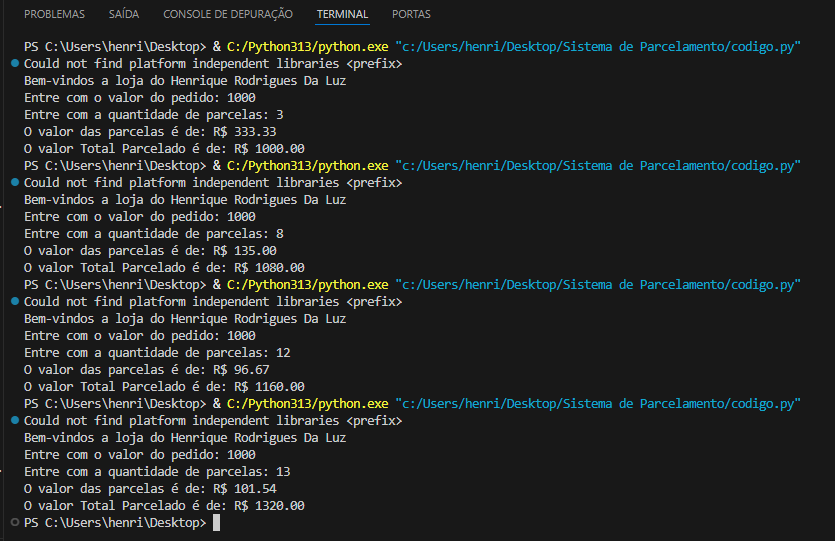
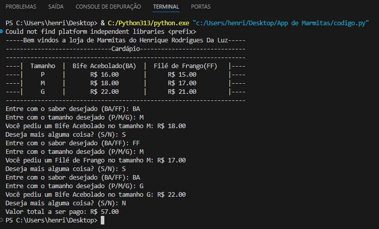
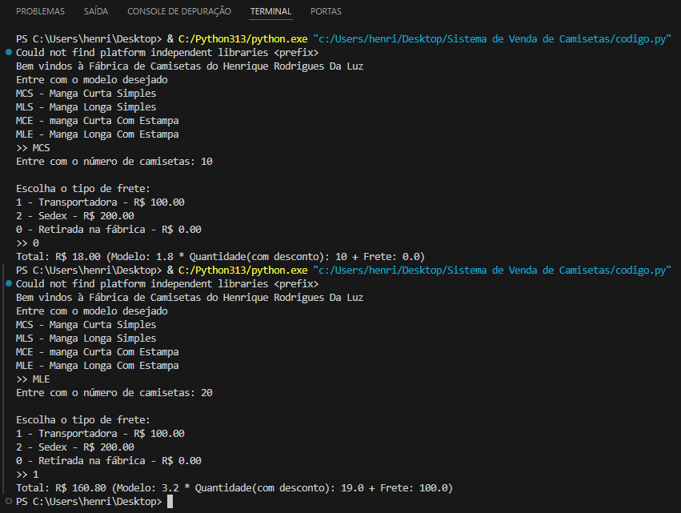
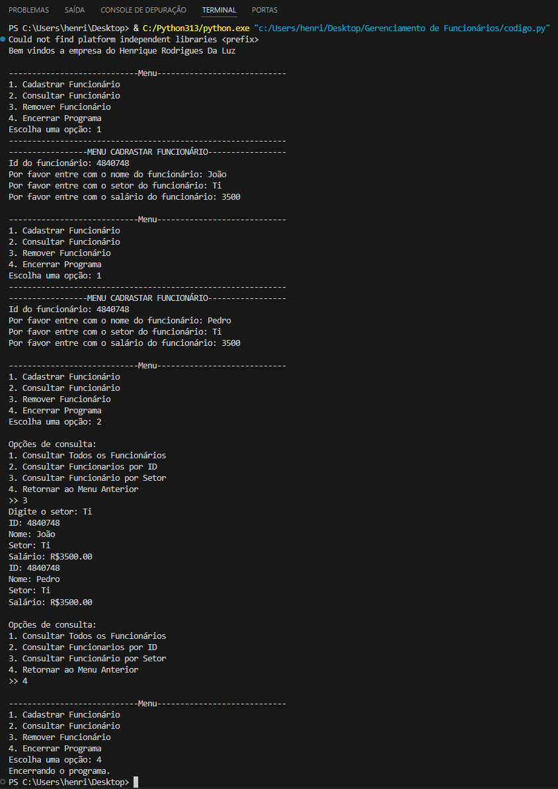
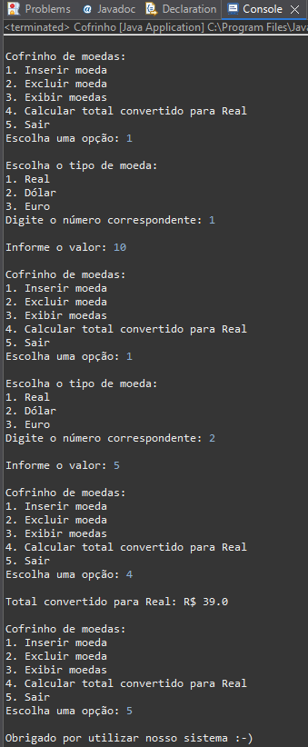

Sobre Mim
Olá, meu nome é Henrique Rodrigues da Luz, tenho 28 anos e sou um amante da tecnologia contemporânea. Desde pequeno sempre tive contato com tecnologia e desde a infância fui fascinado por jogos eletrônicos — consoles como SNES, Game Boy, PS1 e PS2 marcaram minha trajetória. Esses jogos não apenas me divertiam, mas despertavam em mim uma curiosidade crescente sobre como tudo aquilo funcionava.
Aos 15 anos, tive meu primeiro contato com a linguagem de programação LUA, através de um jogo. Como todo jovem curioso, mergulhei na descoberta daquele universo: entender que tudo o que eu conhecia e amava era movido por códigos e lógica foi mágico. As possibilidades pareciam infinitas. No entanto, sem uma base clara de estudos, acabei desistindo temporariamente da ideia de criar algo por conta própria.
Com o tempo, concluí o ensino médio com boas notas e entrei na vida adulta, assumindo responsabilidades no comércio da família. Essa fase trouxe novas experiências e hobbies tais como: leitura, cinema, culinária, ciclismo, jardinagem, entre outros que enriqueceram minha visão de mundo.
Mas em algum momento, a pergunta inevitável surgiu: "E aquele sonho antigo?" A satisfação de criar algo do zero, de resolver problemas lógicos, sempre esteve presente em mim. Foi então que percebi: aprender é uma das capacidades mais poderosas do ser humano, e nunca é tarde para recomeçar.
Hoje, sigo essa jornada com propósito, buscando conhecimento e construindo, passo a passo, o futuro que um dia sonhei.
Estou sempre aberto a novas oportunidades e desafios. Se você está interessado em discutir projetos, colaborações ou apenas trocar ideias sobre tecnologia, não hesite em entrar em contato!
Portfólio
Bem-vindo ao meu portfólio! Aqui, você encontrará alguns dos projetos que desenvolvi ao longo da minha jornada de estudos. Meu foco está em Python e Java, tecnologias BackEnd, onde construí soluções que demonstram minha evolução e paixão por tecnologia.
Projetos em Python
💳 Sistema de Parcelamento
Aplicação que simula um sistema de parcelamento com juros variáveis, conforme a quantidade de parcelas escolhidas pelo cliente.
Tecnologias usadas: Python

Código Fonte

🍽️ App de Marmitas
Sistema de pedidos de marmitas, permitindo que o usuário escolha entre dois pratos e três tamanhos, adicionando ao carrinho.
Tecnologias usadas: Python

Código Fonte
👕 Sistema de Venda de Camisetas
Interface para funcionários de uma fábrica de camisetas, gerenciando pedidos, descontos e opções de frete.
Tecnologias usadas: Python

Código Fonte
🧑💼 Gerenciamento de Funcionários
Software que permite cadastrar, consultar e remover funcionários, com filtros por setor e ID.
Tecnologias usadas: Python

Código Fonte
Projeto em Java
💰 Cofrinho Internacional
Uma aplicação que simula um cofrinho onde o usuário pode adicionar moedas de diferentes países, remover valores e converter para uma única moeda.
Tecnologias usadas: Java

Código Fonte